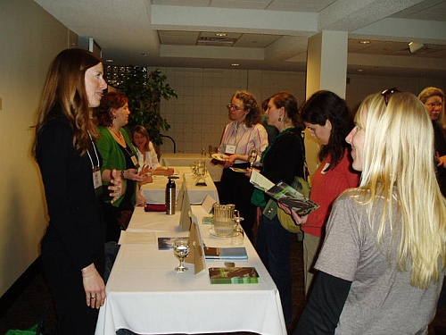

Past Forum Events
These events occurred between 2007-Present
November 28 Event - meet Maggie Koerth Baker & former Senator Ellen Anderson
November 28 Event - Member's only dinner followed by a FREE Book reading by Maggie Koerth Baker and comments by former State Senator Ellen Anderson
Event Schedule for Wednesday, November 28, 2012
6:00 - 6:55 Dinner at Khyber Pass. Includes the Annual Board Meeting and Elections held during dinner.
7:00 - 7:45 Book reading and comments at Common Good Books - registration not required - FREE!
7:45 - ? Q&A
Dinner
Women’s Environmental Network’s members may register online for a pre-event, 6 pm dinner at Khyber Pass.
Dinner - Registration for dinner at Khyber Pass is closed.
Book reading by Maggie Koerth Baker and comments by former State Senator Ellen Anderson - FREE!
Please join the Women’s Environmental Network (formerly the Forum for Women in the Environmental Field), Common Good Books and the Macalester Sustainability Office for a book reading by “Before the Lights Go Out” author and NYTimes columnist Maggie Koerth Baker, as well as comments from Governor Dayton’s Energy Advisor and former State Senator, Ellen Anderson, at Common Good Books in St. Paul at 7 pm, Wednesday, November 28, 2012. The event is free and open to the public.
Common Good Books
38 S Snelling Ave
St Paul, MN 55105
(651) 225-8989

About our Guests
In Before the Lights Go Out, science blogger and NYTimes columnist Maggie Koerth-Baker presents a
comprehensive analysis of the ways in which America produces, distributes, and
consumes energy. She explains how our current systems developed, points out
their strengths and weaknesses, and offers candid assessments of the time, the
difficulty, and the expense involved in making radical changes to the energy
systems that have shaped our lives for a hundred years. Drawing on more than
two years of research and interviews with experts on everything from our
electrical grid and electric cars to fracking and passive buildings,
Koerth-Baker explains what we can do, what we can't do, and why "the
solution" is really a lot of solutions working together.
Ellen Anderson is an advisor on energy issues to Governor Mark Dayton.
She is a former member of the Minnesota Senate and a former nominated chair of
the Minnesota Public Utilities Commission will provide comments on Minnesota’s
current energy capacities, challenges and direction in light of the world’s
declining reserve of hydrocarbon-based energy sources.
November 28 Event (click here to register, then go to bottom of page) - meet Maggie Koerth Baker & former Senator Ellen Anderson
November 28 Event - Member's only dinner followed by a FREE Book reading by Maggie Koerth Baker and comments by former State Senator Ellen Anderson
Event Schedule for Wednesday, November 28, 2012
6:00 - 6:55 Dinner at Khyber Pass (must pre-register - only 1 spot remains). Includes the Annual Board Meeting and Elections held during dinner
7:00 - 7:45 Book reading and comments at Common Good Books - registration not required - FREE!
7:45 - ? Q&A
Part 1 - Dinner
Women’s Environmental Network’s members may register online for a pre-event, 6 pm dinner at Khyber Pass, near the corner of Snelling and Grand Avenues in St. Paul. The dinner is limited to 30 members and tickets will be sold on a first come/first serve basis on WEN’s website at www.fwef.org (no walkups will be accepted).
Dinner - Registration will close when we reach 30 - we are very close to that number, so register TODAY by clicking on the title at the top and going to the bottom of the page.
Khyber Pass restaurant
for $37 (includes dinner and a one year membership to the Women's Environmental Network). If you are already a member, the cost is only $12.00.
Part 2 - Book reading by Maggie Koerth Baker and comments by former State Senator Ellen Anderson - FREE!
Please join the Women’s Environmental Network (formerly the Forum for Women in the Environmental Field), Common Good Books and the Macalester Sustainability Office for a book reading by “Before the Lights Go Out” author and NYTimes columnist Maggie Koerth Baker, as well as comments from Governor Dayton’s Energy Advisor and former State Senator, Ellen Anderson, at Common Good Books in St. Paul at 7 pm, Wednesday, November 28, 2012. The event is free and open to the public.
Common Good Books
38 S Snelling Ave
St Paul, MN 55105
(651) 225-8989
About our Guests
In Before the Lights Go Out, science blogger and NYTimes columnist Maggie Koerth-Baker presents a
comprehensive analysis of the ways in which America produces, distributes, and
consumes energy. She explains how our current systems developed, points out
their strengths and weaknesses, and offers candid assessments of the time, the
difficulty, and the expense involved in making radical changes to the energy
systems that have shaped our lives for a hundred years. Drawing on more than
two years of research and interviews with experts on everything from our
electrical grid and electric cars to fracking and passive buildings,
Koerth-Baker explains what we can do, what we can't do, and why "the
solution" is really a lot of solutions working together.
Ellen Anderson is an advisor on energy issues to Governor Mark Dayton.
She is a former member of the Minnesota Senate and a former nominated chair of
the Minnesota Public Utilities Commission will provide comments on Minnesota’s
current energy capacities, challenges and direction in light of the world’s
declining reserve of hydrocarbon-based energy sources.
September Event on Sustainability Practices in Business (click here to register, then go to bottom of page)
Forum of Women in the Environmental Field (FWEF) has become the Women's Environmental Network
Sustainability and Cradle to Cradle Management
Please join the Women's Environmental Network (formerly the Forum of Women in the Environmental Field) to hear from local businesses about their progressive sustainability management efforts. We will hear firsthand from businesses including Best Buy and Antea Group about their sustainability efforts and how their companies are employing cradle to cradle strategies at different stages in the life cycle process. The event will include a panel presentation from each company followed by a question and answer session. A light dinner will be served with refreshments.
Presenters
Leo Raudys, Best Buy
Tod Christenson, Antea Group
Pete Swenson, Tennant Company
Event date and time
Wednesday, September 26, 2012 from 5:30pm - 7:30pm
Schedule for Wednesday, September 26, 2012
5:30 pm Registration open, dinner available
6:00 pm-7:00 pm Panel presentations
7:00 -7:30 pm Q & A
Location
Antea Group
5910 Rice Creek Parkway #100
Shoreview, MN 55126
Traffic is heavy on 35W northbound due to construction, please allow ample time!
Cost - Register TODAY! (registration closes at 5pm, Monday, September 24, 2012)
$12 members and students
$18 non members
There will be a $2 additional charge for attendees who do not register by the deadline, that includes walkups. Early registration helps us plan for enough food. Please register early.
No refunds/cancellations please.
Thank you to our September Event Sponsor and Host!
Antea Group
July 2012 Summer Birthday Bash! (click here to register, then go to bottom of page)

Forum of Women in the Environmental Field (FWEF)

Please join FWEF for our annual FWEF family event. This year is our 20th anniversary so we will be having a picnic and birthday bash. Join us for hot dogs (veggie and not), picnic platters and birthday cake at the Foundation Shelter in Central Park, Roseville.
Bring your families! There is an adjacent playground and we will have children’s activities, including FACE PAINTING & SCAVENGER HUNT !!!
Bring yourself! We will have a relaxing atmosphere for socializing, enjoying the long days of summer and talking with other environmental professionals in a more casual atmosphere.
July 25, 2012 from 5:30pm to 7:30pm
$12 anyone over 12 years old (including FWEF members and non members)
$2 anyone 2 to 12 years old
$14 for anyone over 12 years old who does not register early (adding a $2 walk up fee)
Location: Foundation Shelter, Central Park, 2495 Victoria Street N., Roseville, MN
The park is accessible by public transit using Metro Transit.
May 2012 Local Food & Drink Event (click here to register, then go to bottom of page)
!!! REGISTRATION CLOSES SATURDAY MAY 19th at 10:00pm !!!
Forum of Women in the Environmental Field (FWEF)


May 23 5:00pm to 7:00pm*
$18 for non-FWEF members
$12 for FWEF members & students
Location: Harriet Brewing is located at 3036 Minnehaha Ave, Minneapolis, MN 55406
Join the Forum of Women in the Environmental Field for a local beer tasting event at Harriet Brewing in Minneapolis, MN. At Harriet Brewing, Beer is Art. The tour will offer a fascinating behind-the-scenes insight into how they make their beer and what an art-infused local brewery looks like. Light appetizers will be served along with beer samples.
The evening will begin at 5pm with light appetizers, Harriet brewery beer samples and networking. This will be followed by a tour of the brewery at 5:45pm.
The brewery is located near the Lake Street/Midtown Station stop on the Metro Transit Light Rail. Numerous buses, including the 7, 21 and 53, frequent the area (many stopping on Minnehaha and Lake Street).
There is a big parking lot (free) next to the brewery.March 2012 Networking Event (click here to register, then go to bottom of page)

Networking in the Environmental Field
Registration closes on Tuesday at 7pm!
- Meet one-on-one with our event sponsors.
- See how their positions relate to and intertwine with the environment.
- Find out what it takes to perform their job and what courses in college helped them.
- Learn about environmental jobs opportunities in a variety of business sectors.
- Talk to others who have found jobs in the environmental field.
- Add these people to your network.
- Network=networth=greater chance of finding a job.
- Already have a job? Use this event to keep up and expand your network.
- You never know who knows who. One small conversation could make such a HUGE difference!
Bring your resume!
Advice will be available from career professionals from the following universities: Hamline, St. Catherine's, St. Thomas and the U of M.
Meet representatives from these organizations.
- Antea Group
- E3 Environmental, LLC
- Valspar
- Historical Information Gatherers, Inc.
- McGough Construction
- American Engineering Testing
- Aveda Corporation
- Capitol Region Watershed District
- Braun Intertec
- Barr Engineering
- Parkway Law
- Natural Resource Group
- Republic Services (Allied Waste)
- Xcel Energy
- AMEC Environment & Infrastructure
- Environment Minnesota
- Wenck Engineering
- Pace Analytical
- Minnesota National Guard Environmental Division
- Association of Women Geoscientists
- Tennant Company
- St. Paul Public Schools Facilities Department
Please register for the event so we can order the appropriate amount of food.
$18 for non-FWEF members
$12 for FWEF members
$6 for students (must provide school and student identification number when you register)
Location
Hamline University, Klas Center, Kay Fredricks Room on the third floor. The building is #2 on this map. This building is accessible. School will be in session so we highly recommend carpooling, biking or taking the bus. The 84 runs up and down Snelling and stops VERY close to the Klas Center. In fact, the Chair of FWEF will be taking this bus from the 46th Street Light Rail Station - come and join me!
Sponsor the Forum!
Consider sponsoring the Forum!
Sponsors help the Forum run smoothly so that we can continue to organize informative events and provide important networking opportunities for professionals in the environmental field. It's also a great way to advertise your company or organization, providing visibility on our website and in our e-newsletter. The newsletter is sent out to over 1,200 professionals in our network three times in the six weeks prior to an event and reaches people in a variety of fields, including consultants, regulators, engineers, educators, and policy experts, among others.
We have three different sponsorship levels.
- Sponsor a single event (any other than the March networking event) for $50.00. A sponsorship at this level entitles you to your company's name/logo linked from our website to yours; your company's name/logo and web link in the e-newsletter sent prior to that event; and admission for one person to attend the event, including their meal.
- Sponsor a full year of events for $300.00. A sponsorship at this level entitles you to all the perks of the single sponsorship, times six! Your company's logo would be displayed and linked on our website and in the newsletter for the entire year, and you would recieve free admission for one person to all six events, including meals.
- Sponsor our annual networking/information exchange event held in March for $100.00. Sponsorship for this event entitles you to a table at the event and admission for two people from your company to staff the table and chat with our members and attendees. Meals are included, and additonal staff are welcome to attend for the member rate of $12 each (to cover food costs). Your company's name/logo would be linked on our website and in the newsletter for the six weeks prior to the event.
Please consider becoming a sponsor! Add a "sponsorship" to your cart and complete the checkout process to confirm your
registration. You can pay by credit card through PayPal, or you can mail a check to The Forum, PO Box 14555, Minneapolis, MN 55414.
For additional information please contact the board Chair, Suzanne Frances at 612-741-1365.
January 2012 Event: Everyday Toxins (click here)
January Event: Everyday Toxins 

Think about how many personal care products you use in one day: shampoo, lotion, deodorant, soap, lip balm, cosmetics, hair spray, shaving products, toothpaste and more. Children use a variety of daily products as well, including bubble bath, diaper cream, sunscreen, etc. Have you ever looked at the labels of these products? Are there any ingredients you recognize?
The Forum of Women in the Environmental Field invites you to join our discussion on toxins in everyday products. Multiple organizations in Minnesota are looking into these products and alternatives, including studies done on Minnesota residents to measure the amount of environmental chemicals in people’s bodies. The evening will start with a light dinner and networking, followed by the speaker presentations and Q & A.
Speakers include:
Barbara Murdock Program Manager with the Environmental Health Tracking and Biomonitoring Program Minnesota Department of Health Lisa Simer Interim Director Preventing Harm Minnesota Kathleen Schuler Co-director Healthy Legacy
The event will be held at the:
Minnesota Pollution Control Agency 520 Lafayette Road North St. Paul, MN 55155 Map and directions
Wednesday, January 25, 2012 (you must arrive by 6pm in order enter the building)
5:30-6:00pm Light dinner and networking
6:00-7:00pm Presentations
7:00-7:30pm Q&A
Public transport to our event: Metro Transit
2012 FWEF events
- January 25, 2012: Everyday Toxins
- March 28, 2012: Networking
- May 23, 2012: Local Food & Drink
- June 24, 2012: FWEF 20th Anniversary
- July 25, 2012: Outdoor Adventure
- September 26, 2012: Business Sustainability
- November 28, 2012: Environmental Leaders
November 2011 Political Panel Event (click here for registration page)
 The Environmental Forecast for the 2012 Legislative Session
The Environmental Forecast for the 2012 Legislative Session
Please join The Forum of Women in the Environmental Field, MPIRG and the Sierra Club North Star Chapter in welcoming State Representatives Jean Wagenius, Alice Hausman, Melissa Hortman and State Senator Linda Higgins for a panel discussion "The Environmental Forecast for the 2012 Legislative Session" at Macalester College from 5:30pm - 8:00pm, Wednesday, November 16, 2011.
- 5:30 - 6:30pm Light buffet and Meet & Greet in the Davis Court in Markim Hall ($18 for non-FWEF members and $12 for FWEF members and $10 for students)
- 6:30 - 8:00pm Introductions by Board Chair, FWEF annual board meeting (request to be a candidate on the ballot for a board position by 11:59pm, Monday, November 14), Panel Disussion in the Lecture Hall in the Campus Center followed by audience questions and answers (Free!)
State Senator Linda Higgins (DFL-58), elected in 1996, is the DFL lead on the Environment and Natural Resources Committee.
State Representative Jean Wagenius (DFL- 62B), elected in 1986, is the DFL
lead on the House Environment, Energy and Natural Resources Policy and Finance Committee.
State Representative Alice Hausman (DFL - 66B), elected in 1989, is the DFL lead on the House Capital Investment Committee.
State Representative Melissa Hortman (DFL - 47B), elected in 2004, sits on the Civil Law, Redistricting and Taxes Committees.
Cost to Register for Event: You can pay via credit card or check using PayPal on our online registration system, below. Please note, all sales are final (no refunds/credits/transfers). Registering early helps us order the appropriate amount of food for the event. Online registration closes 11:59pm, Monday, November 14, 2011.
- $12 for FWEF members (for the light buffet and Meet & Greet)
- $10 for students (for the light buffet and Meet & Greet)
- $18 for non-FWEF members (for the light buffet and Meet & Greet)
- Walk-ins for the buffet and Meet & Greet will be charged an additional $2 per person, so please try to register early (for the light buffet and Meet & Greet)
- FREE to attend the panel discussion only (you do not need to register to attend only this discussion)
Location: Macalester College. For directions to the campus, please go to: http://www.macalester.edu/about/maps/directions/. The Markim Hall, a Platinum Certified LEED building, is located near the corner of Snelling and Grand avenues in St. Paul. The Ruth Stricker Dayton Campus Center is on the South side of Grand Avenue, on the corner of Snelling and Grand.
Carpool to our event: If you are interested in carpooling please contact our transit coordinator at jorg0206@umn.edu.
Bus or bike to our event: Metro Transit trip planner
New member policy! Membership will now be a one year span from
date of purchase, so sign up today for your annual membership! Add a
"membership" to your cart (or use the event and membership
option) and complete the checkout process to confirm your registration.
You can pay be credit card through PayPal, or you can mail a check to
The Forum, PO Box 14555, Minneapolis, MN 55414.

September 2011 - FWEF Member Appreciation Night and tour! (click here for registration page)
Tour the St. Anthony Falls Laboratory!
Date: Wednesday, September 21, 2011 5:30pm-7:30pm

Location: St. Anthony Falls Laboratory, 2 3rd Avenue Southeast, Minneapolis
Description:
Join the FWEF for a tour of the St. Anthony Falls Laboratory (SAFL) near the University of Minnesota, Minneapolis campus. The SAFL overlooks historic St. Anthony Falls just near the Riverplace/St. Anthony Main complex. The SAFL uses water flowing down the Mississippi River for research and education purposes. Read more about the SAFL by going to: http://www.safl.umn.edu/ We will meet in the SAFL auditorium. A light dinner will be provided.
We apologize. Due to current construction/renovation of the building, it is not ADA accessible. Stairs will be used.
Agenda:
You may join the free SAFL seminar at 3:30. The speaker is Brad Gemmell talking on The Perilous Life of Planktonic Copepods: Overcoming Hydrodynamic Contraints
- 3:30-4:30 seminar (optional, but highly recommended - plus you might find parking!)
- 5:30-6:15 registration, dinner, introductions, talk about the SAFL
- 6:15-7:30 tour of the SAFL
- 7:30 - ? informal networking/happy hour at Tuggs (cost is on your own) (optional)
Parking: There is a parking lot, but parking is limited. Parking might be more available if you come early for the seminar. You can also park on the street and walk a few blocks. The nearest public parking is the surface lot between University Avenue and Second Street, with the entrance on 3rd Avenue directly across from the entrance to the General Mills private employee parking lot. There is an unmanned pay station (cash only, but we are not 100% sure), the cost is around $2. If youp park there, then you walk out the corner of the lot closest the the intersection of 2nd Street and 3rd Avenue, and then walk down Third Avenue, cross Main Street, and continue down the driveway to our building. The entrance is up and around through the black gates (a right turn just past the electric substation), then past a left turn to cross a bridge, and to the main entrance off to the left once across the bridge.
Best way to arrive at SAFL: Carpool, take public transportation or bike.
This event is FREE for FWEF members! You must register for this event. Limit 50, so register early.
-
Members FREE (when registering, do not click PayPal as an option, click the button by check or money order)
- Students $12
- Non-members $18
- Sponsor $50 (includes one registration)
The next FWEF event will be on November 16, 2011 and will be a political panel discussion.

FWEF 2013 Events!
January 23, 2013
April 3, 2013
May 18, 2013
July 24, 2013
September 25, 2013
November 20, 2013
Online users
- admin
Log In